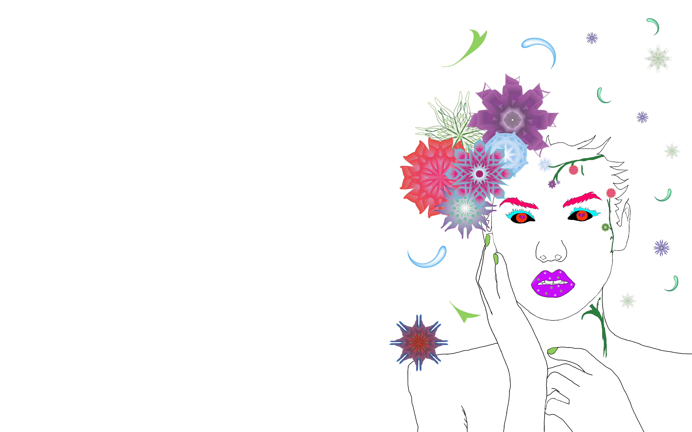
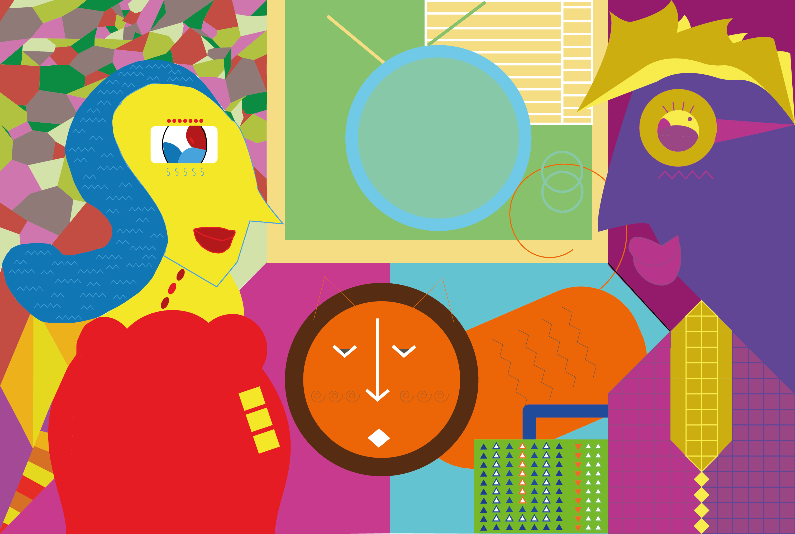

Blok 1
Graphics Design
Leerdoel
Voor blok een wil ik graag leren graphic image maken voor een website. Doormiddel van image, color, layout en compositie. Er zijn veel verschillende graphic image die interressant zijn. Het lijkt mij zo gaaf ook zo te kunnen maken. Daarnaast wil ik meer weten over de programma’s Ai en Ps. Tijdens mijn schooljaren heb ik wel gebruikt gemaakt van deze twee programma, maar heel oppervlakkig. Ik wil namelijk meer weten. Het liefste ook kunnen beheersen.
Deliverables
Voor elke blok heb ik een vast doel om mijn project in te leveren. Wat ik in blok een heb ingeleverd zijn de tekeningen die ik heb gemaakt en de hifi-prototype van mijn website met daarin de eindopdracht. Om mijn progressie te zien, kan jij onderstaande link klikken. Het wordt verwezen naar mijn blog.
Visualisaties
De programma die ik erbij gebruikt zijn de illustrator en de Photoshop. Bij de Ai heb ik eerst de tekening gemaakt en dan overgetrokken in het programma. Daarna heb ik ingekleurd. Met Ps heb ik de foto opgezocht en nagetekend. Daarna heb ik de afbeeldingen bewerkt. Voor meer details klik hieronder.
Hier heb ik eerst een foto opgezocht en de lijn overgetrokken in de Ps. Daarna heb ik de bloemen gemaakt in de Ai. Ik heb de foto en de bloemen samentoegevoegd en dan inkleuren.

The face of another
This look a like drawing was originally a normal image that has been edited into a drawing. In this drawing the women has got an different face that the actual photo, therefore ‘The face of another’.
The luxury hall
This drawing represents the image of wealth. The women in a beautiful red dress is waiting for her husband along with her cat. The husband just return home after work.
Na de wireframes had ik een styleguide gemaakt, wat ik meestal ik oversla. Dit omdat ik de stijl meestal uit mijn hoofd weet en het niet hoef te delen. Echter heb ik gemerkt dat de styleguide mij een goede richting en houvast heeft gegeven voor het ontwerp. Daarom ga ik de styleguide in de toekomst zeker meer gebruiken.
Aan de hand van de wireframes en de styleguide kon ik het ontwerp op een goede, snelle en consistente manier maken. Ik ben erg blij met het uiteindelijke resultaat. Als ik mijn ontwerpvaardigheden vergelijk met de eerste klas, dan ben ik zeker vooruitgegaan en daarom was dit blok voor mij dan ook een succes.
Voor alle mockups kan er gekeken worden op Figma zelf. Dat kan via de volgende link, die een preview geeft van alle Mockups.